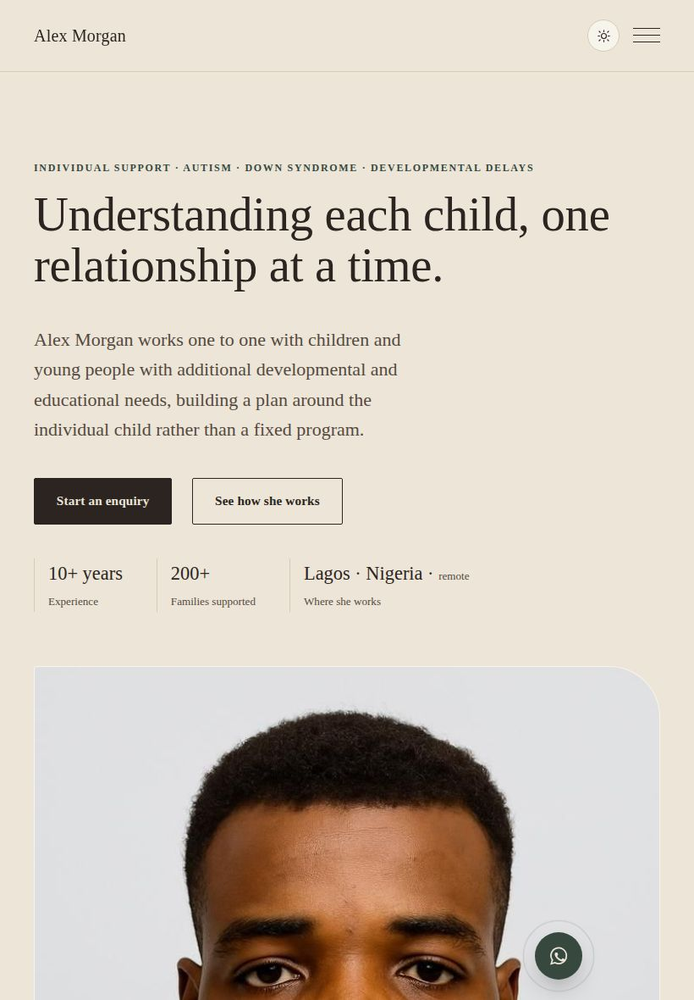
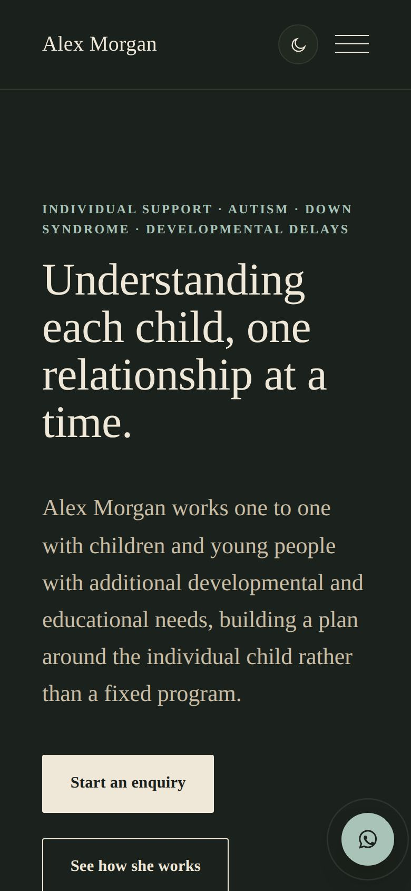

Teaching Portfolio
Built for a specialist working one to one with children with autism, Down syndrome, and developmental delays. The point was never the front end, it was handing her control.
TECHNOLOGY SHOULD MAKE SOMEONE'S WORK EASIER. NOT HARDER TO MAINTAIN.

The client
The practitioner works one to one with children with autism, Down syndrome, and developmental delays. Her portfolio needed to do two very different jobs at once: present her work publicly, and keep sensitive case material genuinely private.
Editorial control, without code
A Decap CMS sits behind the site, so she can write and publish her own articles directly, without a pull request or a message to me every time she wants to add something. Cloudflare R2 stores her media with bandwidth conscious defaults, so hosting images and files does not become an ongoing cost problem.
Private area enforced on Cloudflare
The private portfolio and video library are password gated, for the families she chooses to share them with, and the access check is enforced on Cloudflare. The Decap CMS sign in runs through a small Cloudflare Worker, and the gallery admin stores her photos and videos on Cloudflare R2 behind a Worker.
Why this is a different skill than the rest
Most of the other projects here are code I maintain directly. This one was built so someone with no coding background could run the content side of it herself, indefinitely, without needing me. That is a genuinely different kind of deliverable than a site that only I can update.
What I would change today: the private section's login flow could use a clearer error message when a session expires. It works, but it is not as forgiving as it should be for someone who is not technical.


Need a client to be able to run their own site
Real access control, and a content workflow that does not depend on me.